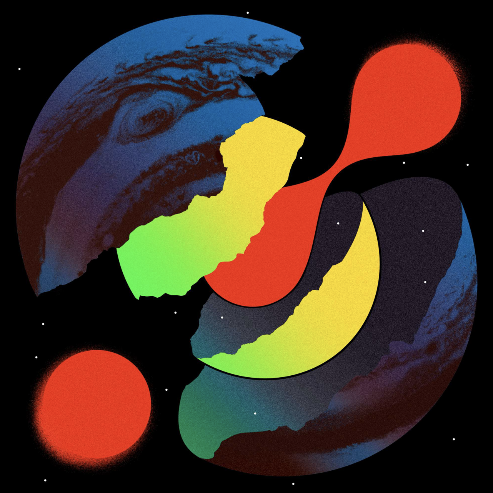

Planet's Mad
Baauer, LuckyMe
Album art (Digital cover; vinyl and CD packaging)
2020
70s book cover aesthetics are infused with the energy of dance music in a system of buildable planets and flat monsters. Custom type inspired by aliens, microorganisms, ooze, etc.
Vinyl: Reversible outer with neon green spot color, shrink wrap with eyeball sticker. Reversible inners. Clear and translucent green records.
CD: Jewel case with planet stickers, no booklet, black and white disc, full color inner, shrink wrap with eyeball sticker.
